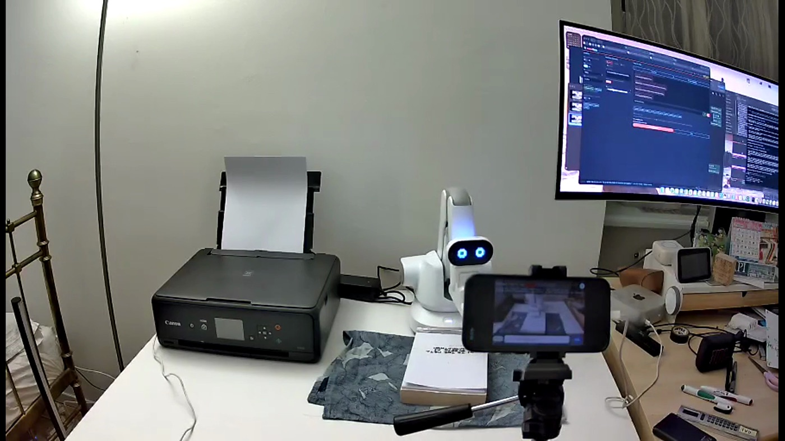
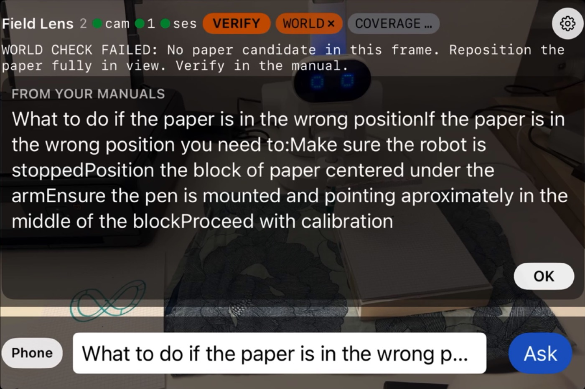
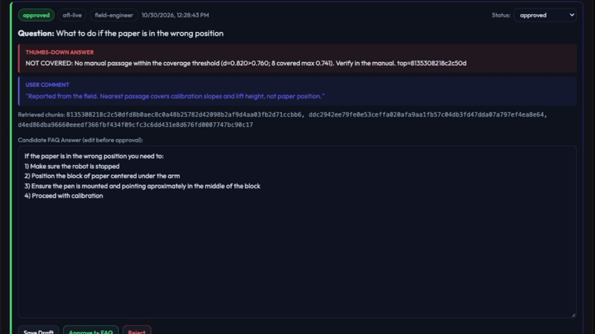

The submission film
The receipt
One question, verbatim and identical both times: what to do if the paper is in the
wrong position. On 30 October an operator wrote the missing passage in their own wiki and approved
it. These are the two citations that query returned, either side of that approval.
Past the 0.760 gate, so there is no answer. The nearest passage was
8135308218c2c50d… in atf-wiki/Topics/Calibration.md — calibration slopes and
lift height, which do not address where the paper is.
Inside the gate, citing 59bb1a272e2ed09d… — the passage the human had just written.
Corpus 38 records → 39. The original collection and its vectors are preserved; nothing was retrained.
Receipts, in the repository: the reviewed pin registry that binds the 39-record collection, the gate calibration over 13 labelled questions, and the before/after comparison. Further down: the controls that rule out the new heading doing the work, and the negative control that held.
The improvement loop
A refusal is not a dead end. It is the first step of a repair that ends in the operator's own documentation — and the model is never retrained.
Nothing here starts with a success. The loop begins when the system cannot answer — and there are exactly two ways that happens.
The system measures how far the question sits from anything in your manuals. If nothing is close enough it stops and says so, rather than reaching for the nearest related passage.
Or a human says the answer was useless. Both routes carry the same payload: the question, the answer, and the exact passages that were retrieved.
A candidate answer is drafted against your own documents. In our run it declined to invent a procedure and instead listed what an expert would need to confirm.
An expert edits the draft and approves it in their wiki. Nothing deploys without human approval. In our run the human discarded the draft and wrote four steps of their own.
The corpus is re-versioned — a new immutable collection, the original preserved byte-for-byte, the addition embedded locally on CPU.
The same question now cites the new passage. The documentation improved. Nothing was retrained, fine-tuned or re-certified.
What we built / to test the thesis
We needed a machine where the failure mode is observable, so we instrumented one we own.



Four pieces. A machine to set up, something that looks at it, somewhere the thinking happens, and a place a human fixes the documentation.
A drawing robot we own and instrumented, so a wrong answer costs a sheet of paper instead of a part. The arm moves only on a human command, over a local serial link the cloud never reaches.
The phone runs against the same interface the glasses expose — the frame source is an implementation detail the rest of the pipeline does not see.
Retrieval over your manuals runs on CPU. Segmentation and the Glimmer readout run on GPU, inside a window capped at four single-use call tokens.
An approved passage is re-indexed into a new immutable corpus version. The only thing that changes between a refusal and an answer is the documentation you own.
Calibrated, not asserted
The coverage gate is a distance threshold. It was measured, not chosen to make a demo pass — and the measurement has a wrinkle we are not hiding.
Questions the Robot Ross manuals genuinely answer. Their top-1 retrieval distance tops out at 0.741.
So the threshold sits at 0.760 — just above the hardest covered question. There is no setting anyone can turn to make the system say yes.
Questions about the right machine that the manual does not actually answer. Two of the three fall below the gate. We are showing you that rather than letting a reviewer find it.
"How do I make coffee with this machine" measures 0.787 — closer to the corpus than the legitimate near-miss at 0.820. Distance measures proximity, not relevance. Both are correctly refused, but near-miss and absurd negatives have to be evaluated separately.
The receipt
On 30 October an operator wrote the missing passage in their own wiki and approved it. These are the two citations the identical query returned, either side of that approval.
| Cited chunk | Distance | Source | |
|---|---|---|---|
| before | 8135308218c2c50d… | 0.8199 | atf-wiki/Topics/Calibration.md |
| after | 59bb1a272e2ed09d… | 0.3997 | sm-faq/robot-ross-atf/fb-1793359723991-x33ca |
Query, verbatim and identical both times: what to do if the paper is in the wrong
position. Corpus ross-manuals-2ca5f2f152267049 (38 records) →
ross-repair-ad3c9065b45ac2d3a0562011 (39). The comparison tool reports
cited_chunk_changed: true and cited_text_changed: true. The original collection and
its vectors are preserved unchanged; activation requires a code-reviewed pin, and rollback is one command.
The new passage opens with the question as a heading, which would flatter the distance. Measured against the same corpus: answer body only scores 0.476, a neutral heading 0.451, the published version 0.400. All three clear the gate by a wide margin — the match is the answer, not the echo.
Adding the passage changed nothing else. "How do I make coffee" still measures 0.7867 and is still refused; the two other calibrated questions returned bit-identical distances.
Negative result / the one we are not burying
We wanted the grounding signal to come from the model's own activations rather than from retrieval. Open weights are why the attempt was possible at all — the reading is taken on the residual stream at prefill, which a hosted API cannot return.
| Probe | Result | Verdict |
|---|---|---|
| Held-out text pilot — prefill AUROC | 1.000 | separated, but n=24, two topic clusters, length confound unresolved |
| Live visual task — supported question | −0.018 | no separation |
| Live visual task — unsupported question | −0.015 | |
| Contrastive probe | 0.575 | retired |
| Jacobian lens vs plain | 0.861 / 0.889 | no advantage, retired |
The score is pinned to zero on the wire and the verdict never reads it. What gates is measured retrieval distance. Groundedness here is a property of the composition — retrieved passage, hash-bound evidence, fail-closed on anything missing — not a model readout.
This class of check simply is not available on a hosted API, which returns tokens and never internal state. The result is negative; the capability to run the experiment at all is the point.
Stated on camera
verify and there is no threshold anyone can turn to change that. The arm moves only on a
human command.sm_unreachable; the item in this write-up was filed through the service identity. The report
genuinely happened — the transport failed.Hackathon Rule 4
The Robot Ross Huenit arm, its controller and the physical rig. The ATF wiki corpus used as the operator's source documents. The Sovereign Mind wiki and review console that the repair loop writes back into.
The Field Lens iOS app on the Meta Wearables DAT interface. The default-deny /assist
contract on Modal. SAM 3.1 scene gating — paper-mask candidates in the live path, plus a measured-geometry
experiment the live card reports as unverified rather than accepting. The Glimmer prefill readout, its four
probe protocols and the negative results that retired them. The coverage gate and its calibration.
Immutable corpus versioning with a code-reviewed pin registry. And the documentation repair loop, end to
end.
Clean-room repository created 26 October 2026; nothing copied from
earlier private prototypes. Calibration labels were reviewed by a human and scoring ran only on frozen
labels. Every negative result is in the repository under docs/verification/.